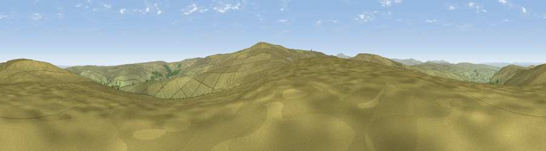

Viewpoint near Allenheads
#12419 in England · top 37% of its area beats it · near AllenheadsThe view, rendered

A 360° render of this exact spot computed from the terrain model, tree cover and land cover — summer colours, afternoon light, calibrated against photographs of famous viewpoints. Real trees, hedges and buildings will differ in detail.
The panorama
Grey silhouette: terrain skyline in each direction (720 bearings, Earth curvature and refraction included). Dashed green: skyline with trees (+15 m) and buildings (+8 m) as obstacles. Blue strip: how far the ground is visible on each bearing.
Where the view opens
Wedge length = distance to the farthest visible ground on that bearing (vegetation-aware). Rings at 10, 25 and 50 km.
What fills the view
98% grassland · 2% woodland
Angular shares of the visible panorama (visual magnitude), not map area. Landscape diversity 0.04 (0–1 Shannon).
Key numbers
More beautiful places nearby
The staircase of upgrades: each row has a higher view potential than everything closer. Driving times are estimates from straight-line distance, calibrated against real road routing — check an actual route before setting out.
| Place | Direction | Drive | Score |
|---|---|---|---|
| Viewpoint near Allenheads | N · 1 km | ~3 min | 69.8 |
| Viewpoint near Allenheads | S · 2 km | ~6 min | 74.6 |
| Grey Nag | W · 15 km | ~27 min | 75.7 |
| Viewpoint near Renwick | WSW · 17 km | ~30 min | 77.0 |
| Little Dun Fell | SW · 18 km | ~31 min | 78.4 |
| Cross Fell | SW · 18 km | ~32 min | 78.7 |
| Viewpoint near Cumrew | W · 26 km | ~42 min | 78.8 |
| Barrock Fell | W · 35 km | ~53 min | 81.1 |
54.81998, -2.28749 · source: screening · position refined by local search. Computed location — check access rights before visiting.